UX design case study · Recite Me
Recite Me Accessibility Checker
Making accessibility less daunting: a tool that scans any website against WCAG and tells people exactly how to fix what it finds.
- My role
- Lead UX Product Designer
- Recite Me
- UX design case study
- Summary
- I designed the Recite Me Accessibility Checker from research through to final UI: a tool that scans any website against WCAG, gives it a clear score and explains every issue in plain English, so content editors and managers can fix problems as well as developers.
- What I did
-
- Competitor analysis
- User interviews
- Personas
- Card sorting
- Information architecture
- User flows
- High-fidelity UI
- Prototyping

Overview
Most organisations know their website should be accessible. Knowing where to start is a different story.
WCAG is long, technical and full of jargon, and the legal side only adds to the pressure. For many teams, accessibility feels like a mountain they don’t have the time or expertise to climb, so it gets pushed down the backlog.
The Recite Me Accessibility Checker was built to change that. Users add their website, the Checker scans it against WCAG, and they get a clear score along with practical, plain-English advice on how to fix each issue. My goal was simple: take something confusing and make it feel achievable.
The challenge
- Accessibility feels overwhelming. People didn’t know which issues mattered most or how to fix them.
- Existing tools spoke to experts. Many competitors gave developers a raw list of errors, leaving content editors, marketers and managers behind.
- Progress was hard to show. Teams needed a way to prove to stakeholders that things were improving over time.
Research
Competitor analysis
I started by looking at the tools already out there to see what they did well, where they fell short, and where we had an opportunity to stand out. The clearest gap was guidance. Most tools told you what was wrong, but very few explained why it mattered or how to fix it.
User interviews
We ran a series of interviews with people who would be using the Checker day to day. These conversations helped us understand their pain points, how accessibility fitted into their existing workflows, and what they’d actually need from a tool like this.
Personas
From the interviews I created two user personas. They kept real people at the centre of every design decision, and gave the wider team a shared reference point when we were weighing up priorities.
-
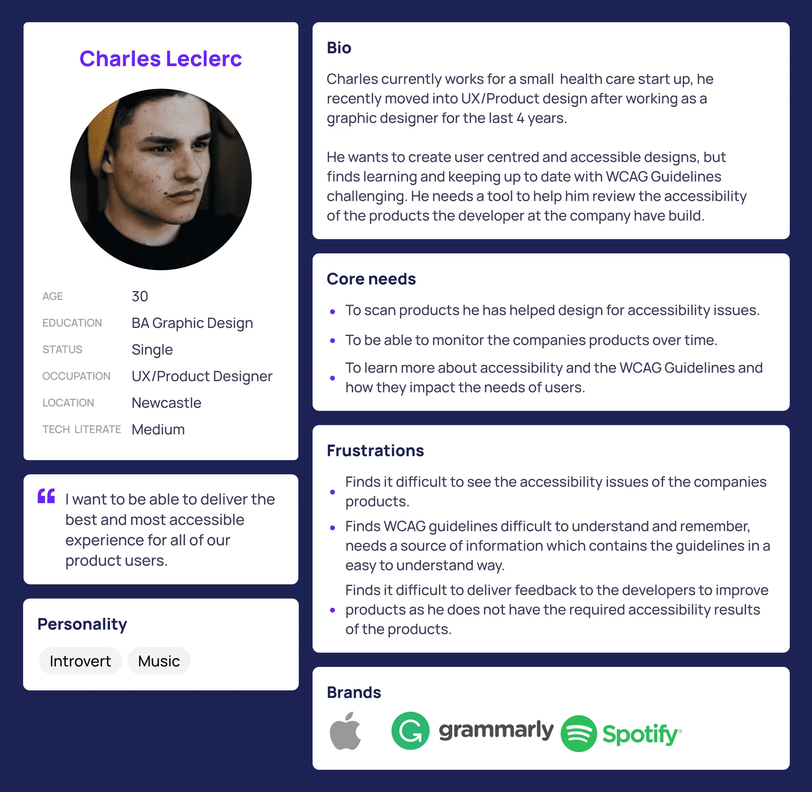
Persona: Charles Leclerc, UX/Product Designer Read Charles’s persona
- Age
- 30
- Education
- BA Graphic Design
- Occupation
- UX/Product Designer
- Location
- Newcastle
- Tech literacy
- Medium
Bio
Charles works for a small healthcare start-up. He recently moved into UX and product design after four years as a graphic designer. He wants to create user-centred, accessible designs, but finds keeping up to date with the WCAG guidelines challenging. He needs a tool to help him review the accessibility of the products his company’s developers have built.
Quote
“I want to be able to deliver the best and most accessible experience for all of our product users.”
Core needs
- To scan products he has helped design for accessibility issues
- To monitor the company’s products over time
- To learn more about accessibility and WCAG, and how they affect users’ needs
Frustrations
- Finds it hard to see the accessibility issues in the company’s products
- Finds WCAG difficult to understand and remember, and needs the guidelines explained simply
- Struggles to give developers feedback without clear accessibility results
Personality and brands
Introvert, into music. Uses Apple, Grammarly and Spotify.
-
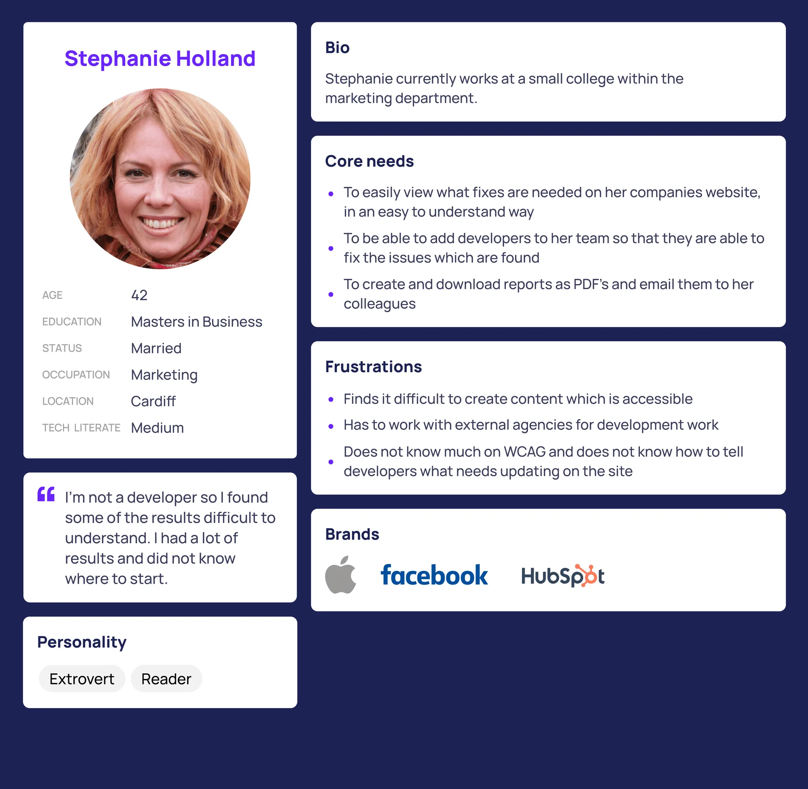
Persona: Stephanie Holland, Marketing Read Stephanie’s persona
- Age
- 42
- Education
- Master’s in Business
- Occupation
- Marketing
- Location
- Cardiff
- Tech literacy
- Medium
Bio
Stephanie works in the marketing department of a small college.
Quote
“I’m not a developer, so I found some of the results difficult to understand. I had a lot of results and didn’t know where to start.”
Core needs
- To see what fixes her organisation’s website needs, in a way that’s easy to understand
- To add developers to her team so they can fix the issues found
- To create and download PDF reports and email them to colleagues
Frustrations
- Finds it difficult to create accessible content
- Has to work with external agencies for development work
- Doesn’t know much about WCAG or how to tell developers what needs updating
Personality and brands
Extrovert, keen reader. Uses Apple, Facebook and HubSpot.
Information architecture
To make sure content sat where people expected to find it, I ran card sorting exercises with colleagues across the business and with external developers. Grouping topics based on how people actually think, rather than how we thought they should, gave us an IA that felt logical to both technical and non-technical users.
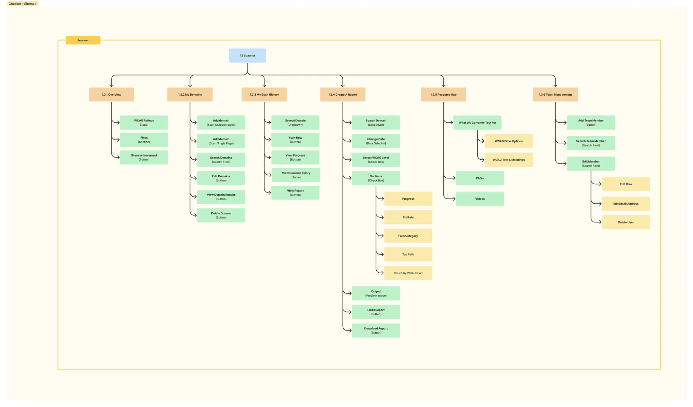
Key features
Adding a domain
Onboarding needed to be quick and painless. Users follow a short, guided flow to add their website. They can add individual pages or upload an XML sitemap to scan the whole site in one go.
During setup, users also choose the WCAG level they’re aiming for (A, AA or AAA), so the results are relevant to their goals from the very first scan.
-
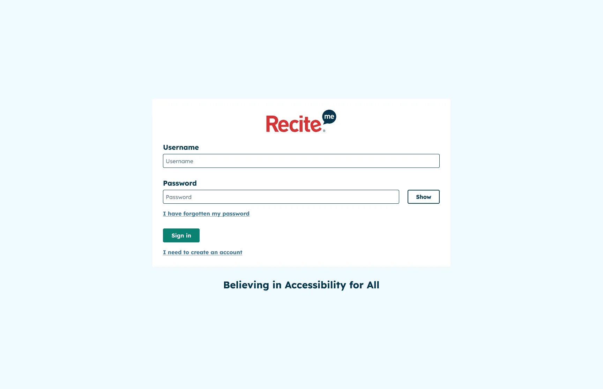
Sign in -
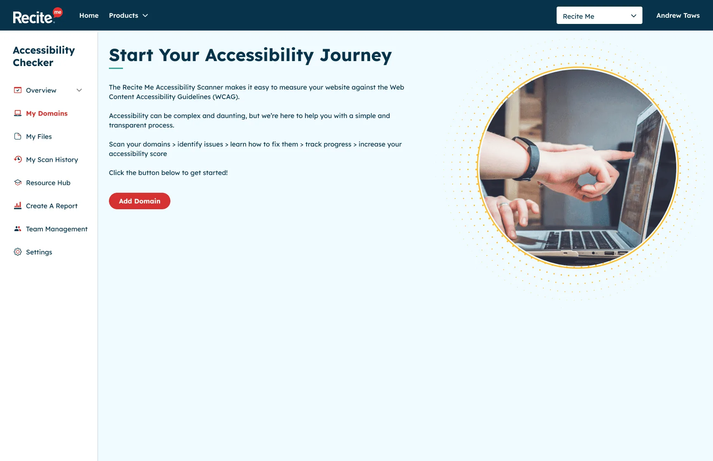
Welcome: start your accessibility journey -
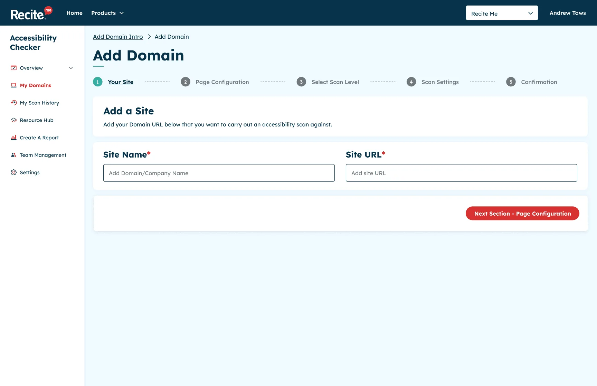
Step 1: your site -
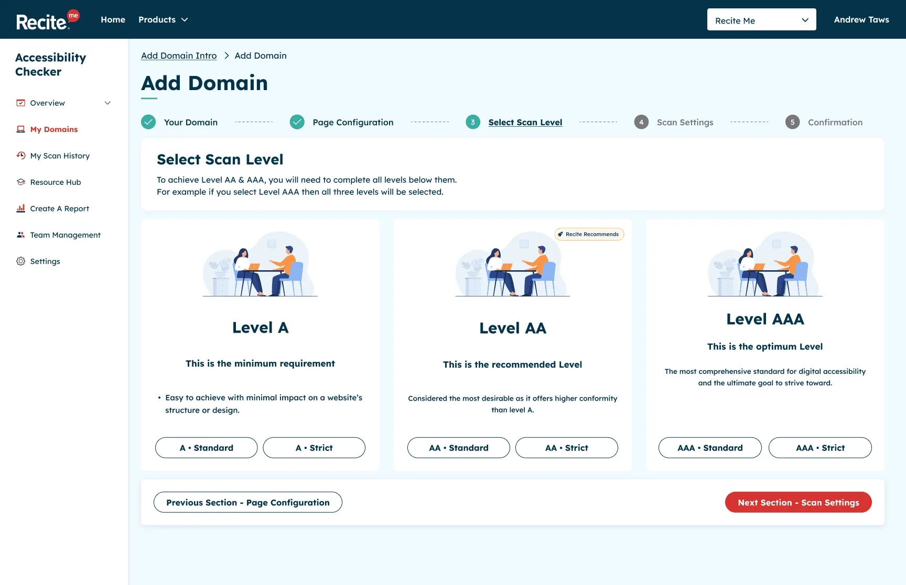
Step 3: choose the WCAG level -
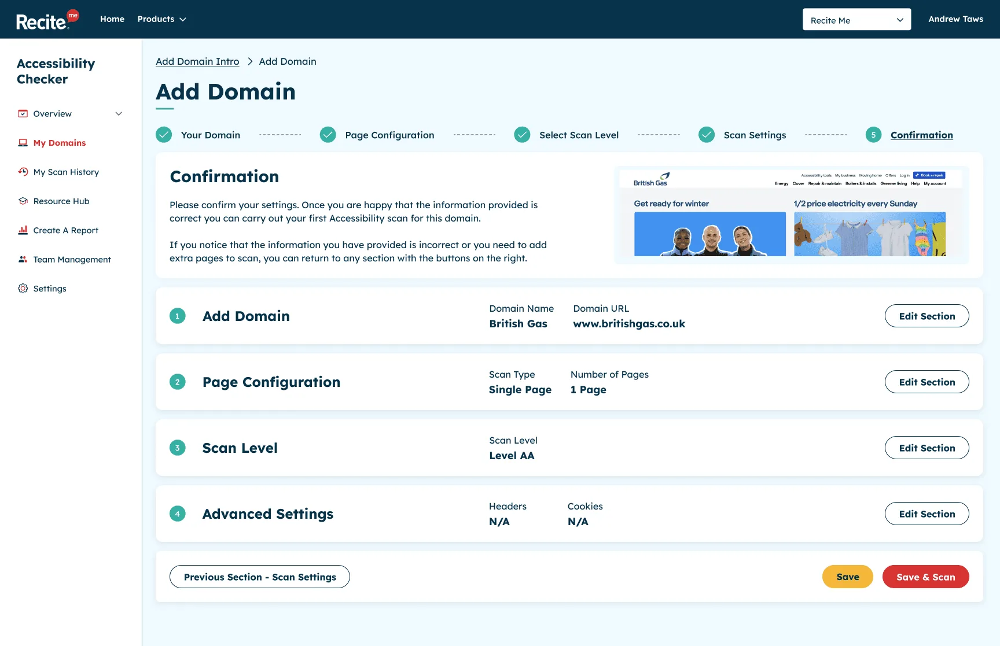
Step 5: confirm and scan
Domain overview
The domain overview is the heart of the Checker. It shows the results of the latest scan with an overall score, broken down by WCAG level, so users can see at a glance where they stand.
Each issue opens up into a detailed view explaining what the problem is, why it matters to real people, and how to fix it. This was the part I cared about most. Rather than a list of errors, it’s guidance someone can act on, whatever their technical background.
-
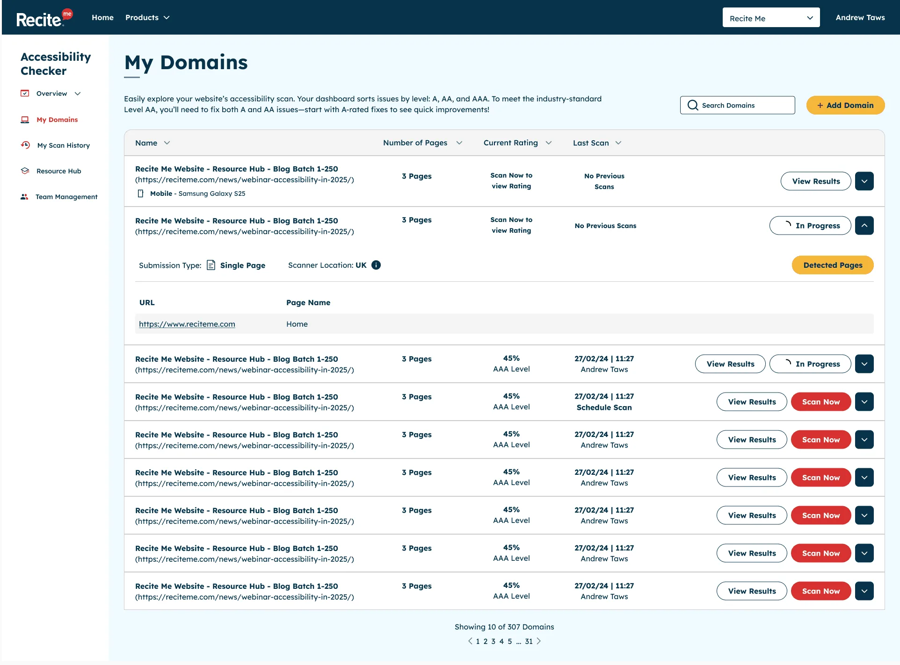
My domains -
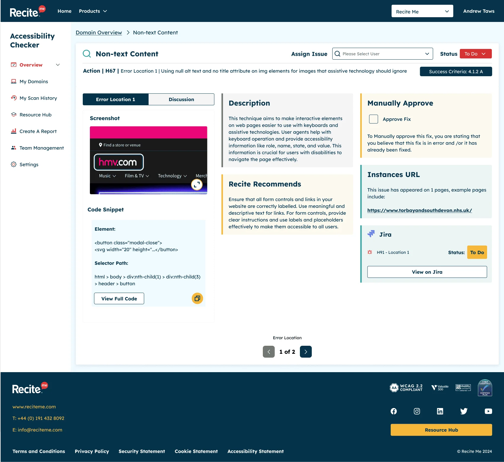
An issue explained in detail, so anyone can fix it
Create a report
Accessibility is ongoing work, and teams need to show their progress. The reporting feature lets users build detailed PDF reports in four steps:
- Choose the domain
- Select the WCAG level
- Set a date range
- Pick the sections to include
The reports can track a site’s score over time or show how many issues have been fixed within a set period, which makes it much easier to demonstrate progress to managers and stakeholders.
-
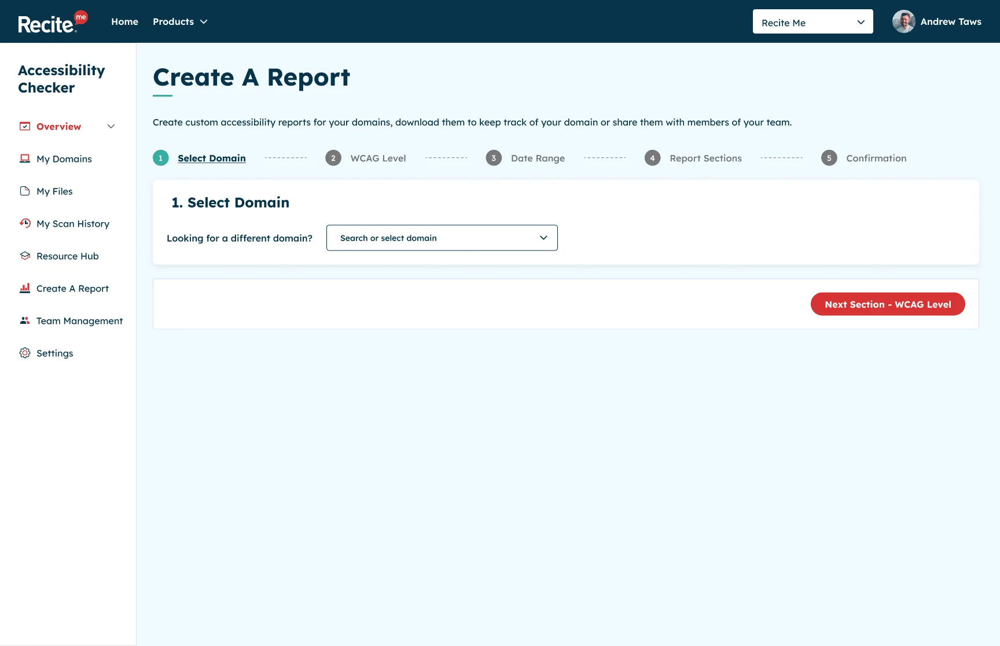
1. Choose the domain -

2. Select the WCAG level -

3. Set a date range -
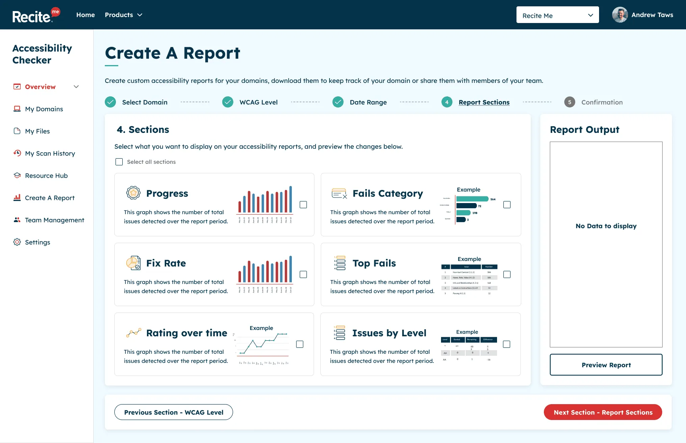
4. Pick the sections to include
Designing an accessible accessibility tool
It goes without saying that an accessibility product has to practise what it preaches. The Checker was designed to meet WCAG 2.2 Level AA, and I ran walkthroughs of the Figma prototypes with developers and QA to make sure what we designed held up in the build, both for users and for the technical requirements.